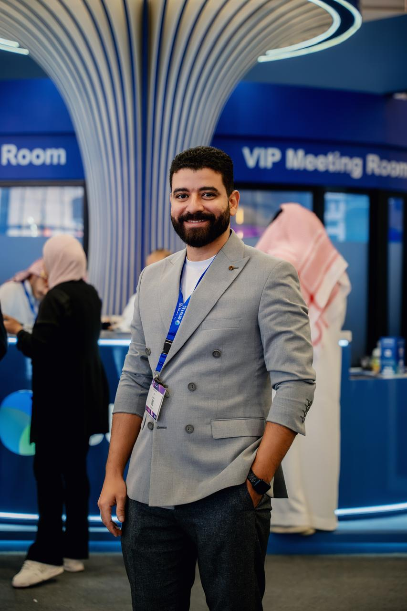
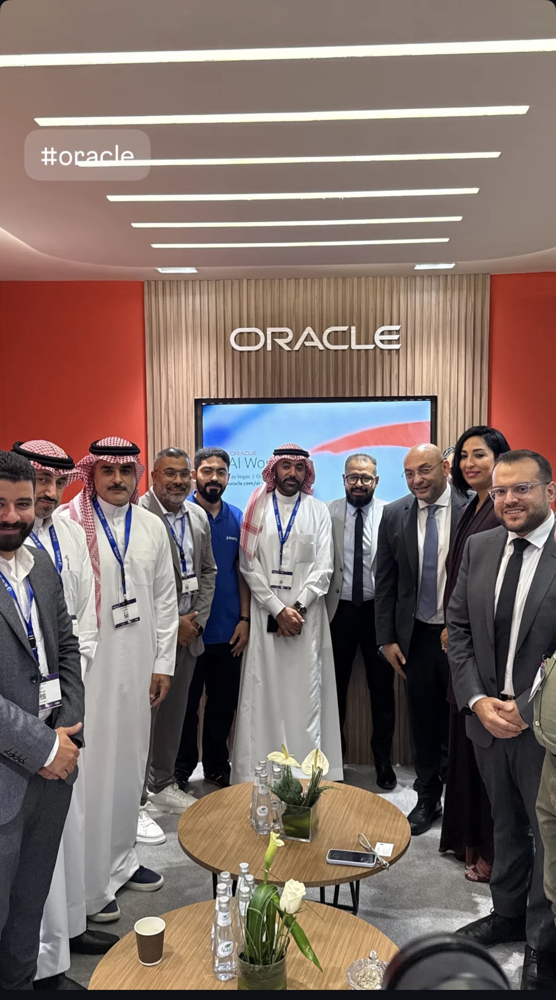
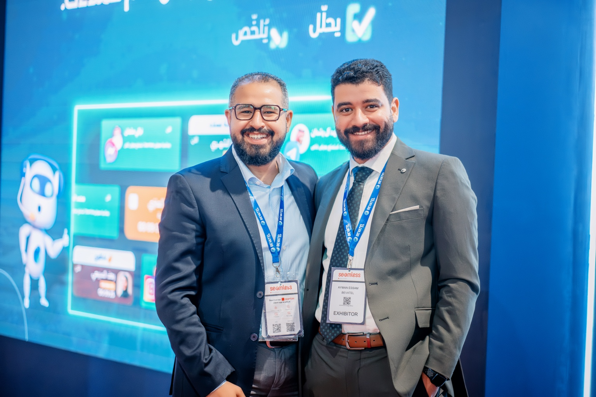

أمتلك أكثر من 13 عاماً من الخبرة في المالية والمحاسبة، وتشمل خبرتي التخطيط والتحليل المالي، الموازنات والتوقعات، الرقابة على التكاليف، إدارة التدفقات النقدية، IFRS، تطبيق أنظمة ERP، الضوابط الداخلية والتقارير الإدارية.
هدفي هو بناء وظيفة مالية دقيقة وسريعة ومرتبطة فعلياً بالأعمال، بحيث تمنح الإدارة رؤية أوضح للأداء وثقة أكبر في اتخاذ القرار.
من هو أيمن عصام؟
أيمن عصام (Ayman Esam) متخصص في الإدارة المالية وإدارة الحسابات والرقابة المالية، ويعمل مديرًا للرقابة المالية للمجموعة (Group Financial Controller) في المملكة العربية السعودية. يمتلك أكثر من 13 عامًا من الخبرة في المحاسبة والإدارة المالية، تشمل مسؤوليات المدير المالي (Finance Manager) ومدير الحسابات (Accounting Manager)، وقيادة الفرق المحاسبية، إعداد القوائم المالية، التخطيط والتحليل المالي (FP&A)، الموازنات والتوقعات، التدفقات النقدية، الرقابة الداخلية وتطوير أنظمة ERP.
يركز أيمن عصام على تحويل البيانات المالية إلى معلومات عملية تساعد الإدارة على اتخاذ القرارات، وتحسين كفاءة العمليات المالية والحوكمة والانضباط النقدي. اطّلع على المسيرة المهنية أو تواصل معه.
رقابة، رؤية، ثم إجراء.
أركز على أنظمة مالية تجعل الأداء واضحاً، والمسؤولية محددة، والقرار أسرع.


الفعاليات المهنية والتواصل مع القطاع.
تمثيل شركة بيفاتيل بصفتي المدير المالي في عدد من أبرز فعاليات الأعمال والتقنية، والتواصل مع قيادات القطاع ومزودي الحلول والشركاء المحتملين، واستكشاف الفرص المرتبطة بالمالية والتحول الرقمي والأتمتة ونمو الأعمال.
LEAP
تمثيل رسمي للشركة · المدير المالي · الرياض، المملكة العربية السعودية


Seamless
تمثيل رسمي للشركة · المدير المالي · المملكة العربية السعودية


